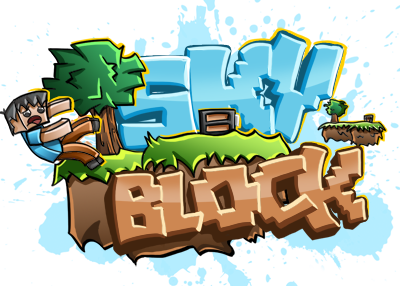
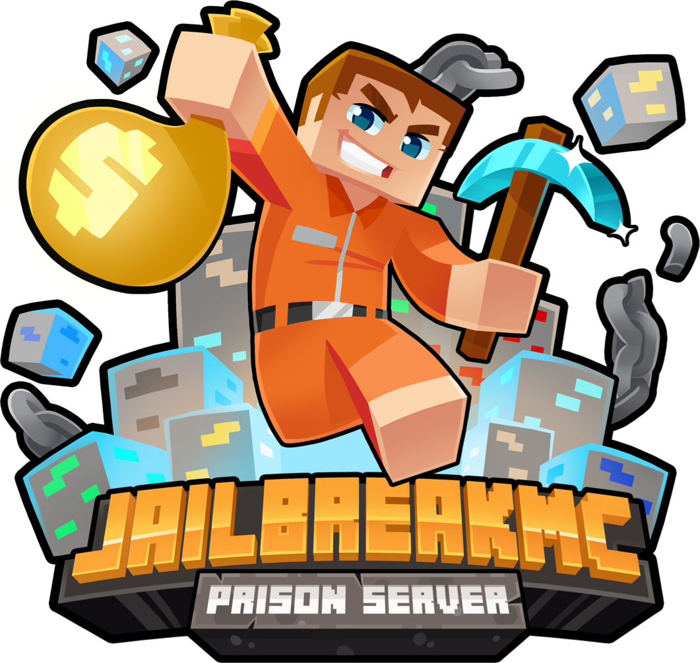

Giới Thiệu
WolfMine - Một server Minecraft: Bedrock Edition được thành lập vào năm 2016. Ban đầu server được xây dựng gameplay câu cá đổi tiền bằng phần mềm Multiplayer for Minecraft, nhưng sau đó do nhận thấy tiềm năng từ việc làm server. Admin Sói Con đã phát triển thêm nhiều thể loại khác như: KitPvP, SkyWars, SkyBlock nhưng nổi tiếng nhất là SkyFrozen và OP Prison/Faction.SkyBlock

Thể lệ chơi này là một dạng thể lệ chơi mới trong MineCraft và rất được ưa
thích vì độ vui của nó! Không giống như sinh tồn, bạn sẽ xuất hiện trên một hòn đảo nhỏ trên trời
với một cái xô nham thạch và ba cục băng! Hãy sử dụng nó một các khôn ngoan để xây dựng nên một hòn
đảo tuyệt vời và mang phong các của riêng bạn đi nào!
Prison
“Tù” ở đây không phải là Jail nhá.
Đây là chế độ mà bạn không thể được tự do chạy nhảy như với Survival,
không được hít thở không khí trong lành như Skyblock,
không thể thoả sức sáng tạo với Creative. Ở chế độ này, công việc hàng ngày của bạn chỉ là ngồi
đào, đào và bới từng khối lên để bán kiếm tiền và nâng cấp Rank cho bản thân. Nghe vậy thôi
nhưng cũng rất đáng để thử đấy !
